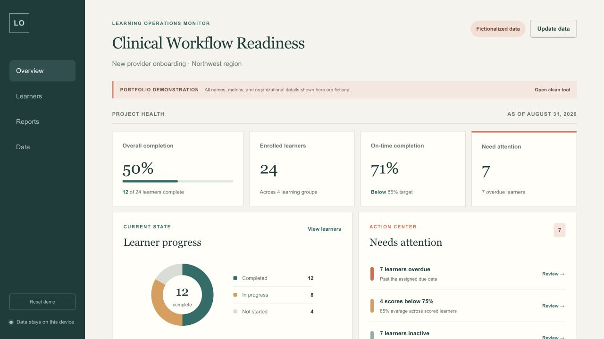

Healthcare workflow context
Experience translating Epic-enabled workflows, infection control, safety, onboarding, compliance, and operational requirements into learning and performance support.
Selected Portfolio · Kaiser Permanente
I design software and system application training as a connected experience: clarify the workflow, translate complexity, prepare delivery, support the moment of need, and improve the system as technology and work evolve.
Role Fit
Experience translating Epic-enabled workflows, infection control, safety, onboarding, compliance, and operational requirements into learning and performance support.
A long track record of making complex platforms, product systems, analytics, security, and AI understandable to mixed technical and non-technical audiences.
Learning objectives, workflow documentation, eLearning, job aids, facilitator support, LMS administration, version control, review cycles, and delivery readiness considered as one system.
Cross-functional work with healthcare, IS, operational, product, engineering, and leadership stakeholders to align on accuracy, usefulness, and adoption.
Selected Work
The healthcare examples show application training and delivery context. The technical and AI examples show how I build capability around complex, fast-changing systems.
Healthcare Case Study
How I supported a 12,000+ employee health system with digital learning, Epic-enabled workflow support, LMS delivery, and a redesigned self-service knowledge system.
Healthcare Artifacts
Selected visual examples with captions that explain the instructional purpose, content architecture, and design choices behind the screens.
Delivery System
A reusable visual framework created to help educators and operational leaders deliver consistent learning across a large healthcare organization.
Technical Enablement
Structured pathways, assessment, product analytics, and technical documentation designed to move learners from information toward applied capability.
Enterprise AI
Company-wide AI literacy and adoption work covering practical workflows, responsible use, emerging tools, and the human judgment needed around them.
Closer Look
These examples show how I orient users to a new application, frame technology decisions for leaders, and make complex technical concepts usable.
Role-based orientation, terminology support, interface selection, and task-based entry points for mixed audiences.
View the artifact → 02 Consultative StrategyA proposed strategy artifact that makes the decision, recommendation, trade-offs, and dependencies explicit.
View the artifact → 03 Technical TranslationPlain-language technical instruction that connects model metrics to operational risk and better decisions.
View the artifact →Live Facilitation Sample
Created and delivered as a ten-minute live teaching demonstration during the Kaiser Permanente interview process. The session moves learners from a simple decision framework into realistic email and voicemail scenarios, coached analysis, feedback, and teach-back.
This public-safe adaptation uses fictional organization names, people, addresses, and messages. It was independently created for an interview demonstration and is not Kaiser Permanente training material or commissioned work.
Click inside the preview or use the arrow keys to advance. Open the full deck for the best experience.

Learning Operations Prototype
I designed and built this local-first monitoring tool for learning professionals managing their own programs. It converts learner records into project-health metrics, progress visualizations, and actionable attention signals.
This independently created prototype is not a Kaiser Permanente product. All names, metrics, locations, and organizational details are fictional.
How I Work
Identify the audience, workflow, performance need, constraints, and source of truth.
Align with subject-matter experts and stakeholders on accuracy and required behavior.
Choose the lightest effective mix of learning, practice, job aids, and facilitator support.
Prepare the LMS, materials, instructors, communications, and learner access as one experience.
Use learner signals, stakeholder feedback, and support patterns to improve the system.